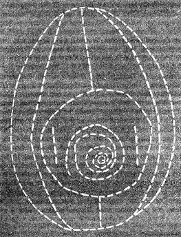

Egg

Description:
Egg. Singular egg. We will make it. Nothing more to be expected.
Ingredients:
- A single egg
- Boiling water
- You must have a body
- We must not be preocupied with what the body does, or should do. We must ask:
- What can the body do?
Steps:
- What is an organ? What is its function? Does it serve to organize the body?
- Limit its lines of flight into stratified space?
- The Body without Organs is made in such a way that it can be occupied,
populated only by intensities.
- Only intensities pass and circulate. Still, the BwO is not a scene, a place, or
even a support upon which something comes to pass.
- It has nothing to do with phantasy, there is nothing to interpret. The BwO causes
intensities to pass; it produces and distributes them in a spatium that is itself
intensive, lacking extension. It is not space, nor is it in space; it is matter that
occupies space to a given degree—to the degree corresponding to the intensities
produced.
- It is nonstratified, unformed, intense matter, the matrix of intensity, intensity
= 0; but there is nothing negative about that zero, there are no negative or opposite
intensities.
- We come to the gradual realization that the BwO is not at all the opposite of the organs.
The organs are not its enemies. The enemy is the organism. The BwO is opposed not to the
organs but to that organization of the organs called the organism. It is true that Artaud
wages a struggle against the organs, but at the same time what he is going after, what he
has it in for, is the organism: The body is the body. Alone it stands. And in no need of
organs. Organism it never is. Organisms are the enemies of the body.
Return Home